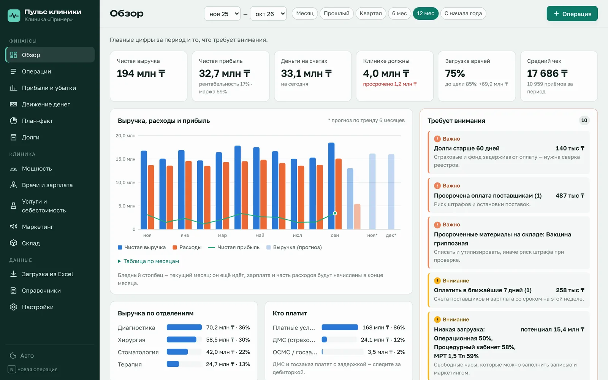
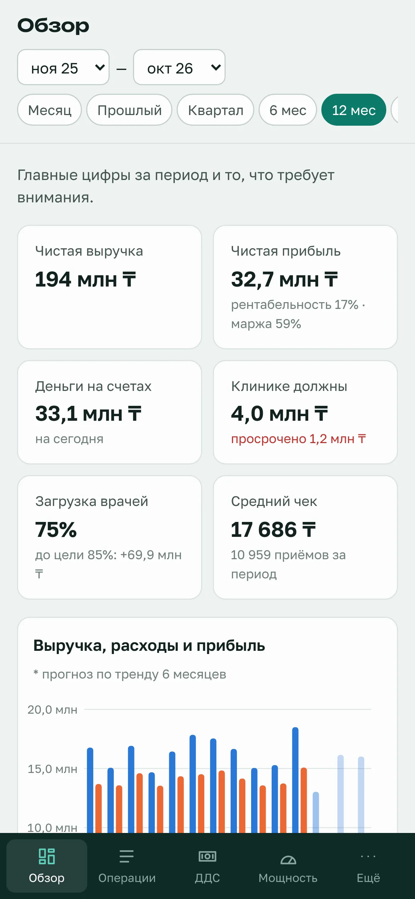
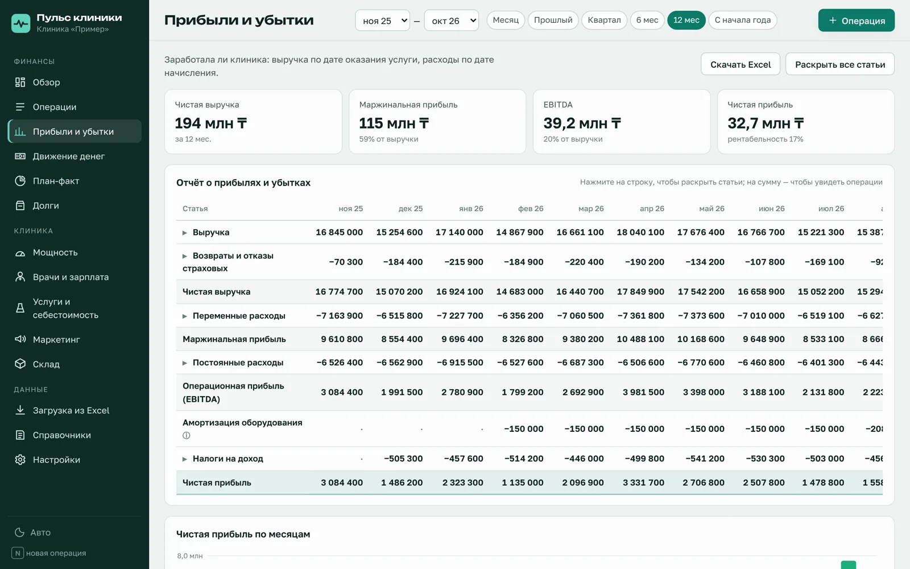

«Пульс клиники» собирает данные из бухгалтерии, МИС и Excel и показывает руководителю главное: сколько клиника реально заработала, где деньги, кто должен — и сколько ещё можно заработать на тех же врачах и кабинетах.


Бухгалтерия ведёт свою часть, маркетинг — свои таблицы, расписание живёт в МИС, а остальное считается вручную. Руководитель видит обрывки.
Прибыль по отделениям и врачам считается раз в квартал, а решения нужны каждую неделю.
Кассовый разрыв приходит внезапно: страховая заплатила позже, оборудование купили раньше.
Долги по реестрам и отказы страховых никто не сводит в одну таблицу.
Незанятые часы операционной или МРТ — это деньги, которые клиника не получила.
Каждая цифра раскрывается до операций, из которых она сложилась. Расчёты — по правилам управленческого учёта, с пояснениями «как считается».
Выручка по дате оказания услуги, возвраты и отказы страховых, маржинальная прибыль, EBITDA, амортизация, чистая прибыль — по месяцам.
Поступления и выплаты по дате оплаты, остатки по кассам и счетам, прогноз на 3 месяца с предупреждением о кассовом разрыве.
Дебиторка ДМС, ОСМС и рассрочек со старением по срокам, кредиторка поставщикам, частичная оплата и отказы страховой.
Загрузка врачей, кабинетов и оборудования, узкие места отделений, сколько денег лежит в недогруженных часах, сценарий «что если».
Выручка за час, средний чек, повторные визиты, неявки, кросс-выручка. Зарплата по схеме врача: оклад, процент, процент от маржи.
Материалы по нормам, процент врача, эквайринг, накладные за время услуги — маржа каждой позиции прайса и ABC-анализ.
Воронка по каналам, стоимость обращения и пациента (CAC), ценность пациента (LTV), окупаемость рекламы (ROMI).
Остатки и сроки годности по партиям, списание по нормам услуг (сначала то, что раньше истекает), сигнал о просрочке.
Выписка банка, кассовая книга, отчёты МИС — программа сама находит колонки, проверяет строки и не пускает дубли.
Любой отчёт — в настоящую таблицу: итоги, маржа, загрузка пересчитываются формулами, если поменять исходную цифру.
Руководитель открывает «Обзор» — и видит главное за выбранный период. Программа сама подсвечивает, что требует решения.
Видно, какие услуги кормят клинику, а какие почти не приносят денег — и почему: материалы, процент врача или время.
Прогноз остатка по тренду и бюджету. Кассовый разрыв виден за месяц-два — есть время договориться с поставщиком или банком.
Сколько выручки клиника получит, если довести загрузку операционной, МРТ или врача до целевой — в тенге.
Созваниваемся на 30 минут: показываем программу на данных, похожих на ваши, отвечаем на вопросы.
в день заявкиПереносим данные за последние 12 месяцев из Excel, 1С и МИС, настраиваем статьи, врачей, кабинеты, услуги и роли сотрудников.
1–2 неделиКаждый день — операции или выписка банка, раз в месяц — часы и услуги из МИС. Руководитель смотрит «Обзор».
с первого месяцаДемо-клиника с выдуманными цифрами. Можно открыть её прямо сейчас и всё понажимать — без регистрации.

Отчёт о прибылях и убытках по методу начисления: каждая строка раскрывается до статей, нажатие на сумму показывает операции.
Короткий ролик о главном. Полный разбор каждого раздела с озвучкой — 15 минут, пришлём вместе с ответом на заявку.
Первый месяц — бесплатно: посмотрите программу на своих цифрах.
Небольшая клиника или кабинет
Многопрофильная клиника
Несколько филиалов
Нет. МИС ведёт расписание и приёмы, 1С — официальную бухгалтерию. «Пульс клиники» берёт из них цифры и показывает управленческую картину, которой там нет.
Операции вносятся вручную или загружаются выпиской банка, кассовой книгой, выгрузкой из 1С. Часы, приёмы и продажи услуг — отчётом МИС раз в месяц. Программа сама находит колонки, показывает ошибки и не пускает повторную загрузку тех же строк.
Обычно 1–2 недели: перенос данных за последние 12 месяцев, настройка справочников и обучение. Первые отчёты на ваших цифрах — уже в первую неделю.
В защищённой облачной базе. Доступ — только у сотрудников, которых пригласил владелец клиники, по ролям. Данные других клиник изолированы на уровне базы. Персональные данные пациентов в программе не хранятся.
Да. Руководитель смотрит «Обзор», деньги и загрузку с телефона, бухгалтер работает с компьютера. Ничего устанавливать не нужно — программа открывается в браузере.
Все данные выгружаются в Excel и резервной копией файлом — в любой момент. Договор помесячный.
Да: демо открыто без регистрации, а первый месяц на ваших данных — бесплатно.
Оставьте контакты — свяжемся в течение рабочего дня, ответим на вопросы и договоримся о показе.